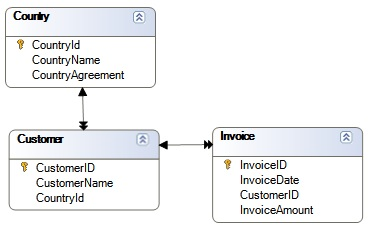
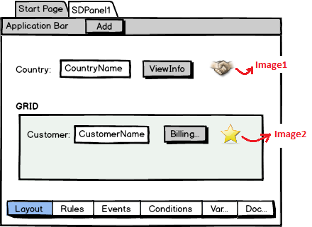
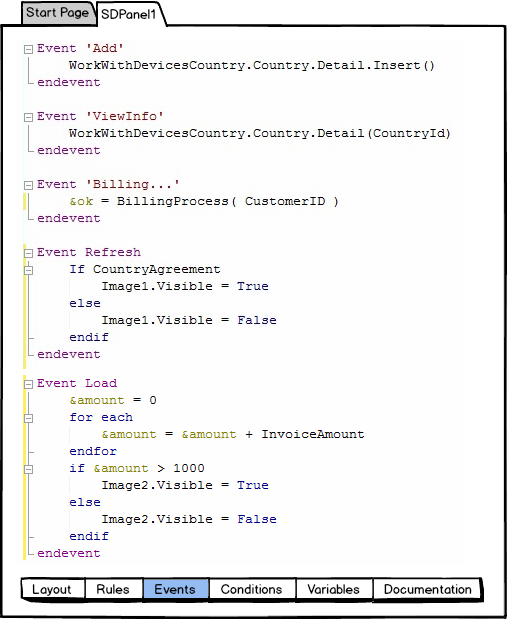

This article describes how GeneXus determines the tables to browse for information that will be loaded on a Panel object.
For each Layout (either for a Panel object, or Work With for Smart Devices object node -List, Detail or Section-), you have a fixed part, and possibly one or more grids (not considering grids associated with Structured Data Types).
If there are attributes in certain places (described below) related to the Layout, the plain (or fixed) part will have a Base Table. Similarly, if there are attributes in certain places related to a grid, there will be a Base table for it. Each base table is determined independently from one another, and navigations are independent as well (it is similar to having a pair of parallel For Each commands).
The attributes involved in determining the fixed part base table are:
The attributes involved in determining the grid base table are:
Suppose you have the following relationship among database tables:

Suppose you have created a Panel (named SDPanel1), where you want to display the Country received by parameter, and the Customers from that country. To this end, you have defined the following layout:

Rules:
parm( in: CountryId);
Furthermore, when the country has signed trade agreements, you indicate it by setting image1 as visible. Similarly, if the customer being loaded onto the grid has over 1,000 dollars invoiced, you will want to indicate thisby setting image2 as visible.
You have also inserted three buttons: one in the Application Bar ("Add"), one on the form (ViewInfo), and the third one on the grid (Billing...). Each button will have a user event.
This is the corresponding Event tab:

Determining fixed part base table:
The attributes taken into account are:
So, the form base table is Country. Since Panel is receiving the country identifier in the attribute (CountryId), an automatic filter by equal will be specified.
Determining grid base table:
The attributes taken into account are:
So, the grid base table is Customer. And again, since Panel is receiving the country identifier in the attribute (CountryId), an automatic filter by equal will be specified.
Note that both navigations are independent as if they corresponded to two parallel For Each commands.
Native Mobile Applications Events
Server-side Events in Native Mobile Applications
Event Triggering Order in Native Mobile Applications
Orders and Filters in Grids for Native Mobile Applications
| Backlinks |
| Client-side Events in Native Mobile Applications |
| Toc:Native Mobile Applications Development |